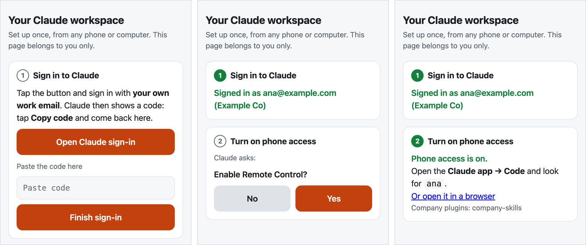

What the best AI teams build for themselves, installed in a ten-person company.
An always-on agent for each person, one library of skills that every agent shares, and the machines kept running, set up by an engineer who then works on your workflows. The most AI-native teams build this with their own platform engineers. A ten-person company has none, so we bring it.
in daily use The skills already run every day in two small companies we operate. early carafe is a proof of concept, the Fleet operator is lab-tested, and the box is a plan.
Big companies get an engineer on site. Small companies can't pay for one.
AI labs send engineers to their big customers, to sit with a team until the agents do real work. That is how agents earn their keep. At ten people, nobody pays for that.
Someone has to sit with the team.
Agents pay off on a company's own workflows: its portals, its boards, its books. Each one has to be found, taught and checked.
Agents stop when the laptop closes.
Someone has to keep a machine awake, signed in and patched for every person, and fix it from afar. That is a platform team's job.
The next company pays again.
Without reusable skills, each engagement repeats the work. What an engineer built for one office stays there, so the cost never comes down.
An engineer for days, not a platform team for years.
The infrastructure is the same in every office, so the engineer's time goes to the work. The work is kept as skills, so the next company of the same kind starts ahead. That is the aim; pilots will measure it in setup hours, support minutes and tasks done.
The box goes in.
An engineer, ours or a partner's, plugs the carafe box into the office network, connects the company's sign-in and gives everyone a carafe. Each person signs their agent in themselves.
Work, not plumbing.
With the infrastructure already standard, the engineer sits with each team and turns one or two of its workflows into skills.
Skills travel.
With the company's permission, and checked for client names and secrets, those skills become a pack for that kind of business. A subscription per person covers monitoring, upgrades and new skills.
The box, the engagement and the subscription are the plan, not yet sold. No prices yet.
A Monday at a ten-person company, with an agent each.
Nobody learns a new tool. Each person talks to their own agent from the phone, the agent works in the company's systems with the company's skills, and a person approves anything that leaves the building.
"Which invoices are overdue?"
The person who chases payments asks from the train. The agent reads the books, drafts the reminders and posts them for approval. One tap, and it sends them and records what it did.
"Anything new on our permits?"
The agent checks the government portal in a real browser each morning, updates the job's card on the team's board, and flags what needs a person.
"How do we do this here?"
Instead of interrupting a busy colleague, the new person asks the agent, which answers from the same skills everyone else uses. The floor rises for everyone.
| built in-house, as YC describes it | our counterpart, built or planned |
|---|---|
| teams write their own workflows "as English with prompts", and engineers leave the loop | skills, written with the people who do the work |
| a shared tool registry: 20 tools at first, "more than 350 today", every team adds its own | skilldecant: one library, poured into every agent |
| a nightly loop that reads agent conversations and improves the skills | darwin improves a skill on request nightly loop next |
| a multiplayer harness, which "I don't think has been solved well yet by anybody" | carafe: an agent per person, all sharing the company's skills; a first step |
| agents running on everyone's machines | Fleet operator and carafe box keep them on |
| a platform team that builds and runs all of it | an engineer for a short engagement |
The playbook we work from.
Y Combinator runs its agents on its own software, one database and a tool registry its teams keep adding to. We built the same habits in our own two companies. Each piece has a counterpart in our kit; some are built, some are still planned.
Left column from Pete Koomen and YC's partners, "Inside YC's AI Playbook", Y Combinator, 2026-05-27. The mapping is our interpretation, not evidence for our kit. Damaris X is not affiliated with or endorsed by Y Combinator.
An always-on agent for each person, driven from the phone.
A carafe is one person's own container: Claude Code, their work folder and the company's skills. They set it up once on one web page, the cellar door, then work from the Claude app. No computer of theirs has to stay on.
- Built and walked through end to end on 2026-10-26: sign-in, phone access turned on, a session started from claude.ai/code in a browser running in the carafe, and recovery after a restart. A test on a real phone is next.
- Designed for one namespace per person on k3s. For work that needs a real desktop and Chrome, or its own security boundary, a Mac station runs the same setup on a Mac mini: one for finance, one for audit, one for the owner, as many as the company needs.
One page to set it up. After that, the phone.

The sign-in happens in the person's own browser, through Anthropic's flow. The one-time code goes straight into their own carafe; the setup page keeps no copy.
"Trust this folder?" and "Enable Remote Control?" are shown verbatim and answered by the person, never for them.
One library of skills, shared by every agent.
A skill is a SKILL.md and its scripts: a workflow written down so an agent can do it. skilldecant installs a company's skills once and links them into Claude Code, Codex, OpenClaw and Hermes. Release a new version and upgrade once; every agent on the machine reads it.
- One copy, no drift. By default agents read the installed library through links, so there is nothing to copy and nothing to fall behind.
- Checked before it travels. A shared collection is linted for client names, secrets and personal paths before it leaves a company.
- Kept sharp. darwin, alchaincyf's open-source skill optimiser (MIT), scores and improves a skill. Our packaging adds judges from a different model family, scoring each edit blind.
git repo the skill's source, versioned │ installed once, with Homebrewone library a single installed copy │ linked into each agentClaude Code linkCodex link, once switched onOpenClaw link + one config entryHermes link + one config entry# upgrade once: every agent follows
The machines stay on, and a failed check gets its fix.
The Fleet operator runs Fleet, the open-source device manager, and checks that every Mac station is awake, logged in and running its agent. When a check fails and the Mac is online, it runs the configured fix; signing in again stays with the person. The carafe box puts it on a Raspberry Pi 5 in the office, as the company's own control plane.
Measured 2026-10-28 in a kind cluster against a macOS 26.5 VM. Not yet in production.
no data centrethe box is yoursThe company owns the box and decides who is admin. Support would get in only with its approval, each visit logged.
no open portsthe office networkClaude Code's Remote Control opens no inbound ports, so phones need no public address. Fleet stays on the office LAN.
a Mac per boundaryas many as neededFront desk, finance, back office, audit and the owner each get their own Mac, sign-ins and keys, so one role's agent is kept away from another's files and accounts. The operator keeps every one running.
remote handsplannedA 5G backup line, a battery and a KVM, added where a real failure calls for them.
Where each piece stands, without rounding up.
| piece | what it does | status |
|---|---|---|
| skills | workflows written so an agent can run them: finance, permits, sales, boards, mail | in daily use in two small companies we operate |
| skilldecant | installs skills once and links them into every agent | v0.10.0 on our own machines |
| carafe | an always-on agent per person, from the phone | proof of concept passed 2026-10-26; HTTPS, company sign-in and provisioning next |
| Fleet operator | keeps Mac stations awake, signed in and running | lab-tested six checks, two companies kept apart; MDM next |
| carafe box | the office's own control plane on a Raspberry Pi 5 | plan layout drawn, not built |
| the engagement | an engineer for setup and workflows; skills packs by industry | plan our own two companies first |
Free for noncommercial use. Licensed for companies.
For small companies that want agents at work without a platform team, and for the engineers and IT partners who would set them up.
Write for a commercial license, a pilot, or to become a setup partner.
Noncommercial
carafe and skilldecant are licensed under the PolyForm Noncommercial License 1.0.0. Source access on request.
Commercial
Commercial use, including running them for a company's own staff or its clients, needs a separate written license from Cheng Cheng.
Yours stays yours
What a company writes as skills, and what a person keeps in their carafe, belongs to them.
Third parties
darwin is alchaincyf's, under MIT. Fleet, Claude Code, Codex, OpenClaw, Hermes, Homebrew and macOS keep their own terms.